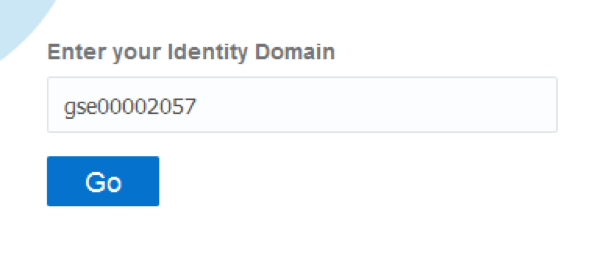
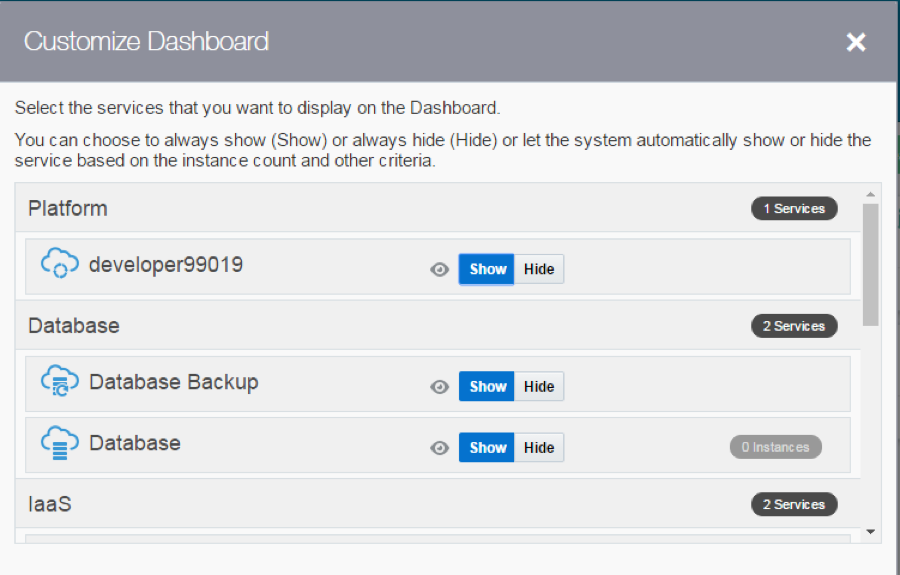
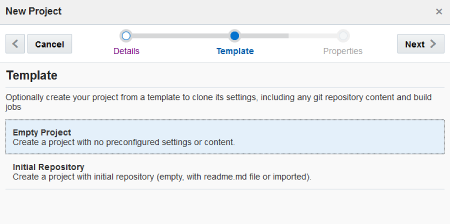
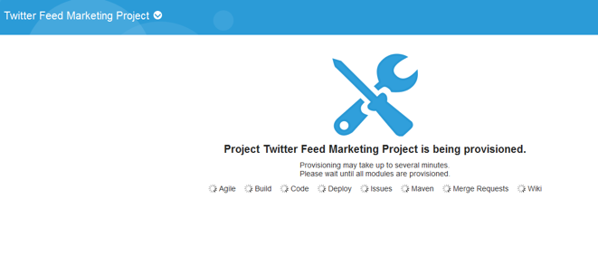
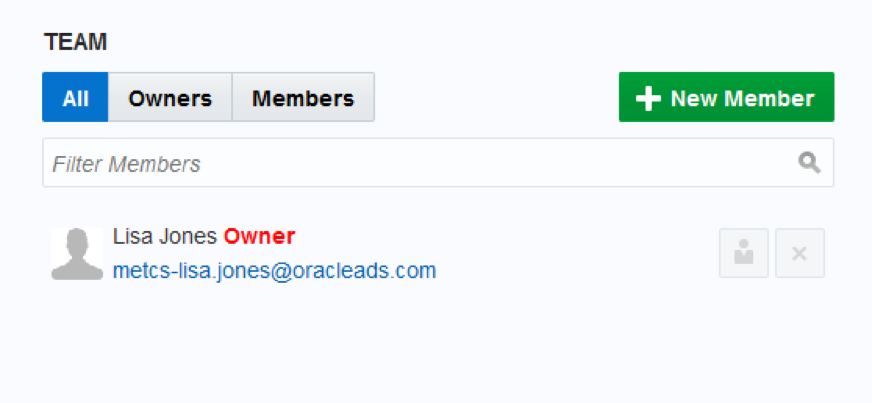
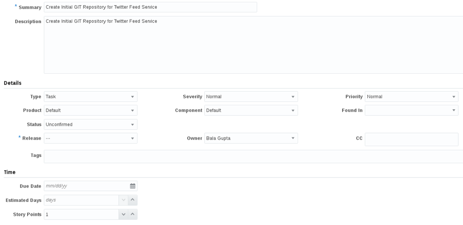

This is the first of several labs that are part of the Oracle Public Cloud DevOps Cloud Native Microservices workshop. This workshop will walk you through the Software Development Lifecycle (SDLC) for a Cloud Native project that will create and use several Microservices.
You will take on 3 Personas during the workshop. The Project Manager Persona will create the projects, add tasks and features to be worked on, and assign tasks to developers. The Project Manager will then start the initial sprint. The Java Developer persona will develop a new twitter feed service that will allow for retrieval and filtering of twitter data. The JavaScript Developer persona will develop a new Twitter Marketing UI that will display the twitter data to allow for analysis. During the workshop, you will get exposure to Oracle Developer Cloud Service and Oracle Application Container Cloud Service.
Please direct comments to: Dennis Foley (dennis.foley@oracle.com)
From any browser, go to the URL:
https://cloud.oracle.com
click Sign In in the upper right hand corner of the browser

IMPORTANT - Under my services, ask your instructor which Region to select from the drop down list, and click on the My Services button.

Enter your identity domain and click Go.
NOTE: The Identity Domain, User Name and Password values will be given to you by the instructor.

You will be presented with a Dashboard displaying the various cloud services available to this account.

If all of your services are not visible, click on the Customize Dashboard, you can add services to the dashboard by clicking Show. If you do not want to see a specific service click Hide

Oracle Developer Cloud Service provides a complete development platform that streamlines team development processes and automates software delivery. The integrated platform includes an issue tracking system, agile development dashboards, code versioning and review platform, continuous integration and delivery automation, as well as team collaboration features such as wikis and live activity stream. With a rich web based dashboard and integration with popular development tools, Oracle Developer Cloud Service helps deliver better applications faster.
From the Cloud UI dashboard click on the Developer service. In our example, the Developer Cloud Service is named developer99019.

The Service Details page gives you a quick glance of the service status overview.

Click Open Service Console for the Oracle Developer Cloud Service. The Service Console will list all projects for which you are currently a member.

On Details screen enter the following data and click on Next.
Name = Twitter Feed Marketing Project
Description = Project to gather and analyze twitter data
Note: A Private project will only be seen by you. A Shared project will be seen by all Developer Cloud users. In either case, users need to be added to a project in order to interact with the project.





Note: As previously mentioned, if you are not allowed to have multiple users in your Corporate or Trial accounts, you will skip step 4. When in subsequent steps/labs you are asked to log in as different users responsible for different roles, you will physically perform the tasks as the same user, but you should mentally assume the role of a different persona.

Set the Role to Owner, and enter the Username bala.gupta, and then click Add
Repeat the process for Username john.dunbar. When completed your team should consist of 3 members.

In this step you are still connected in the logica role of the Project Manager, Lisa Jones
Click Issues on left hand navigation panel to display the Track Issues page.

Click New Issue. Enter the following data in the New Issue page and click Create Issue.
Note: no matter who you assign as the task “physical” owner, for the sake of this workshop, Bala Gupta will be the “logical” owner. The same concept holds true for other assignments made in this lab.
Summary:
Create Initial GIT Repository for Twitter Feed Service
Description:
Create Initial GIT Repository for Twitter Feed Service
Type = Task
Owner = Bala Gupta (or you, if another user is not available)
Story Points = 1
// Example
var s = "JavaScript syntax highlighting";
alert(s);Note: Story point is an arbitrary measure used by Scrum teams. This is used to measure the effort required to implement a story. To learn more: https://agilefaq.wordpress.com/2007/11/13/what-is-a-story-point/

Start Here
Before you start using the Agile methodology in Oracle Developer Cloud Service, it is important that you know the following key components of the Agile page.